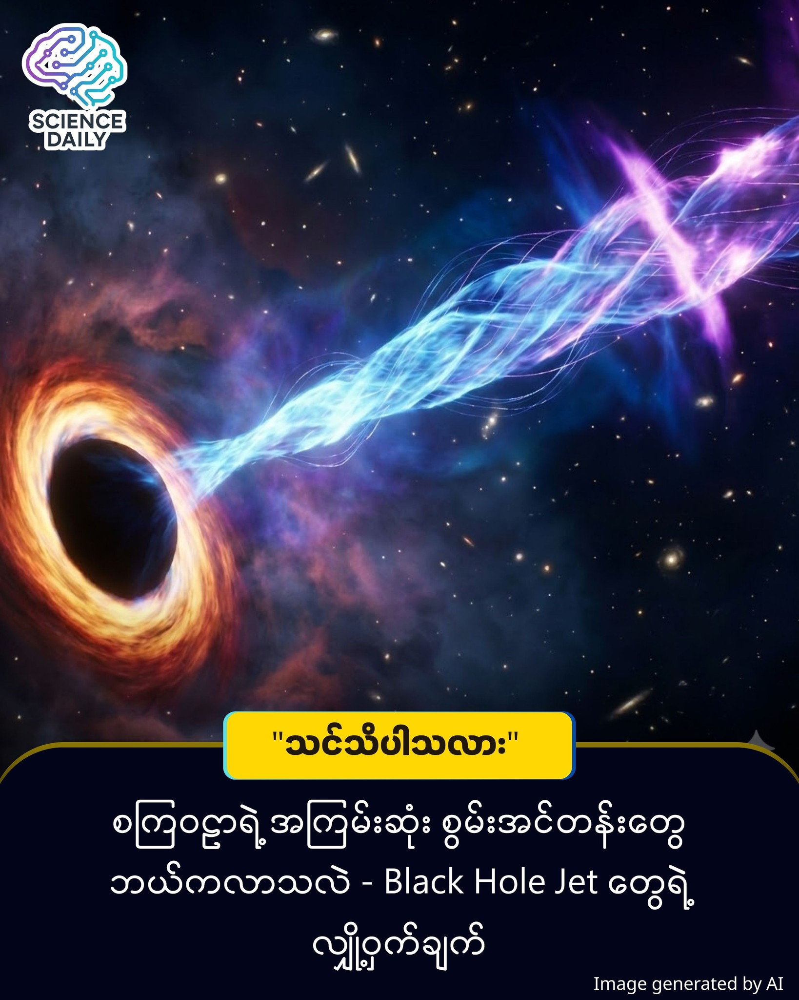

Black Hole Jet
Black Hole တွေဆီက ပဟေဠိဆန်တဲ့ စွမ်းအင်တန်းကြီးတွေအကြောင်း အဖြေရှာတွေ့ပြီ

Black Hole တွေဆီက ပဟေဠိဆန်တဲ့ စွမ်းအင်တန်းကြီးတွေအကြောင်း အဖြေရှာတွေ့ပြီ
"မိတ်ဆွေများခဗျာ ဒီ ဆောင်းပါးက သေချာရှင်းပြထားတဲ့အတွက် စာနည်းနည်းရှည်ပါမယ်နော် ခဗျ ။ သိပ္ပံကို တကယ်စိတ်ဝင်စားပြီး ဦးနှောက်အလုပ်ပေးချင်သူတွေပဲ ဆက်ဖတ်ပေးကြပါလို့ မေတ္တာရပ်ခံ ပါတယ် ခင်ဗျာ။"
X-ray နက္ခတ္တဗေဒ စတင်ပေါ်ပေါက်လာချိန်ကတည်းက သိပ္ပံပညာရှင်တွေ ခေါင်းစားခဲ့ရတဲ့ ပဟေဠိတစ်ခုကို NASA ရဲ့ IXPE (Imaging X-ray Polarimetry Explorer) မစ်ရှင်က အဖြေရှာပေးလိုက်နိုင်ပါပြီ။ အဲ့ဒါကတော့ Supermassive Black Hole ကြီးတွေကနေ အာကာသထဲကို ပစ်လွှတ်လိုက်တဲ့ စွမ်းအင်တန်း (Jets) တွေထဲမှာရှိတဲ့ X-ray တွေရဲ့ မူလဇာစ်မြစ် (Origin) က ဘယ်ကလဲဆိုတာပါပဲ။
ဒီအကြောင်းကို နားလည်ဖို့ ရိုးရိုးရှင်းရှင်း ဥပမာတစ်ခုနဲ့ ပြောပြပါမယ်။ Black Hole ကြီးတွေဟာ အလွန်အားကောင်းတဲ့ စွမ်းအင်တန်း (Jets) တွေကို အလင်းအလျင်နီးပါးနှုန်းနဲ့ မှုတ်ထုတ်လေ့ရှိပါတယ်။ ဒီ Jets တွေထဲမှာ X-ray (ဓာတ်မှန်ရောင်ခြည်) တွေ ပါနေတယ်။ သိပ္ပံပညာရှင်တွေ သိထားတာက ဒီ X-ray တွေဟာ "Inverse Compton Scattering" လို့ခေါ်တဲ့ ဖြစ်စဉ်ကနေ ထွက်လာတာပါ။
ဒါကို ဘောလုံးကန်တာနဲ့ နှိုင်းယှဉ်ကြည့်ရအောင်။
အလင်းမှုန် (Seed Photons): - ဒါကို ဘောလုံးလေးတွေလို့ မြင်ယောင်ကြည့်ပါ။
စွမ်းအင်မြင့် အမှုန်များ (Particles in Jet): - ဒါက ကန်မယ့် ခြေထောက်တွေပါ။
X-ray: - ဘောလုံးကို ကန်လိုက်လို့ အရှိန်ပြင်းပြင်းနဲ့ ထွက်သွားတဲ့ အခြေအနေပါ။
ပြဿနာက ဒီဘောလုံး (Seed Photons) တွေက ဘယ်ကရောက်လာတာလဲဆိုတာ ဘယ်သူမှ သေသေချာချာ မသိခဲ့ကြပါဘူး။ Jet ထဲကပဲ ထွက်လာတာလား၊ ဒါမှမဟုတ် အပြင်က Background Radiation တွေဆီက လာတာလားဆိုတာ ငြင်းခုံနေခဲ့ကြတာပါ။
တွေ့ရှိချက် အသစ်
NASA ရဲ့ IXPE တယ်လီစကုပ်ဟာ Perseus Galaxy Cluster အလယ်က "3C 84" လို့ခေါ်တဲ့ ဧရာမ Active Galaxy ကြီးကို ရက်ပေါင်း ၆၀ ကြာ (နာရီပေါင်း ၆၀၀ ကျော်) စောင့်ကြည့်လေ့လာခဲ့ပါတယ်။
IXPE ဟာ X-ray တွေရဲ့ Polarization (အလင်းလှိုင်းတွေရဲ့ ဦးတည်ဘက် တူညီမှု ရှိမရှိ) ကို တိုင်းတာခဲ့တာပါ။ X-ray တွေရဲ့ Polarization ဟာ ၄% ဝန်းကျင် ရှိတာကို တွေ့ရပါတယ်။
ဒီရလဒ်က ဘာကိုပြလဲဆိုတော့... "Seed Photons" တွေဟာ Jet (စွမ်းအင်တန်း) ထဲကနေပဲ ထွက်လာတာဖြစ်တယ် ဆိုတာကို အခိုင်အမာ သက်သေပြလိုက်တာပါပဲ။ ဒီသီအိုရီကို "Synchrotron Self-Compton" လို့ခေါ်ပါတယ်။ အပြင်ကလာတာ မဟုတ်ပါဘူး။
သေချာပြန်ရှင်းပြပါမယ်
ပြောရမယ်ဆိုရင် ဒီမစ်ရှင်ရဲ့ အဓိကသော့ချက်ကတော့ IXPE တယ်လီစကုပ်ဟာ X-ray တွေရဲ့ Polarization (အလင်းလှိုင်း ဦးတည်ဘက် တူညီမှု) ကို တိုင်းတာခဲ့တာ ဖြစ်ပါတယ်။ ဒါကို မျက်စိထဲမြင်သာအောင် ပြောရရင် ပုံမှန်အလင်းလှိုင်း (Unpolarized) တွေက ပွဲဈေးတန်းထဲက လူအုပ်လို ဟိုသည် လျှောက်သွားနေကြပေမယ့် Polarized ဖြစ်တဲ့ အလင်းတွေကတော့ စစ်သားတွေ ချီတက်သလို ဦးတည်ချက် တစ်ခုတည်းကို ညီညီညာညာ သွားကြတာပါ။ IXPE က တိုင်းကြည့်လိုက်တဲ့အခါ ဒီ X-ray အလင်းတန်းတွေထဲမှာ ၄% လောက်က "စစ်ချီသလို ညီညီညာညာ" ဖြစ်နေတာကို တွေ့ရှိခဲ့ပါတယ်။ ကြားလိုက်ရင်တော့ ၄% ဆိုတာ နည်းတယ်လို့ ထင်ရပေမယ့် ဒီရလဒ်က သိပ္ပံပညာရှင်တွေအတွက်တော့ အဖြေပါပဲ။ အကယ်၍ ဒီ X-ray တွေသာ အပြင်ဘက်က လာတာဆိုရင် ဒီလောက်တောင် ညီညာနေမှာ မဟုတ်ပါဘူး။ ဒါကြောင့် ဒီလို ၄% လောက် "စီစီရီရီ" ဖြစ်နေခြင်းက ဒီ X-ray တွေဟာ အပြင်က လာတာမဟုတ်ဘဲ Jet လို့ခေါ်တဲ့ စွမ်းအင်တန်းကြီးရဲ့ အတွင်းပိုင်းကနေပဲ ထွက်ပေါ်လာတယ်ဆိုတာကို ခိုင်ခိုင်မာမာ သက်သေပြလိုက်နိုင်တာ ဖြစ်ပါတယ်။"
ဒီတွေ့ရှိချက်ဟာ ခိုင်မာတဲ့ အထောက်အထား ဖြစ်ပါတယ်။ ဒီလေ့လာမှုကို နိုင်ငံတကာ နက္ခတ္တပညာရှင်အဖွဲ့က လုပ်ဆောင်ခဲ့ပြီး ရလဒ်တွေကို The Astrophysical Journal Letters မှာ ဖော်ပြထားပါတယ်။ IXPE တစ်ခုတည်းတင်မကဘဲ Chandra, NuSTAR နဲ့ Swift စတဲ့ အခြား အာကာသကြည့် မှန်ပြောင်းတွေရဲ့ ဒေတာတွေနဲ့ပါ တိုက်ဆိုင်စစ်ဆေး အတည်ပြုထားတာ ဖြစ်ပါတယ်။
ဒီတွေ့ရှိချက်က Black Hole တွေရဲ့ ပတ်ဝန်းကျင်မှာ အမှုန်တွေ (Particles) ဘယ်လို အရှိန်မြှင့်တင်ခံရလဲ၊ စွမ်းအင်တွေ ဘယ်လို ထုတ်လွှတ်လဲဆိုတဲ့ အခြေခံ ရူပဗေဒသဘောတရားတွေကို ပိုမိုတိကျစွာ နားလည်လာစေမှာ ဖြစ်ပါတယ်။ စကြဝဠာထဲက အကြမ်းတမ်းဆုံး နေရာတွေအကြောင်း လေ့လာရာမှာ အရေးပါတဲ့ ခြေလှမ်းတစ်ခုပါပဲ။
Source: NASA / The Astrophysical Journal Letters
#NASA #BlackHole #Astronomy #SpaceScience #MyanmarTech #Physics #Universe #ScienceNews #Galaxy